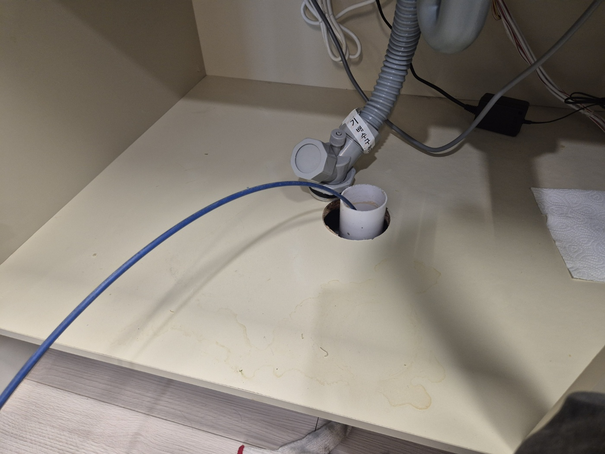
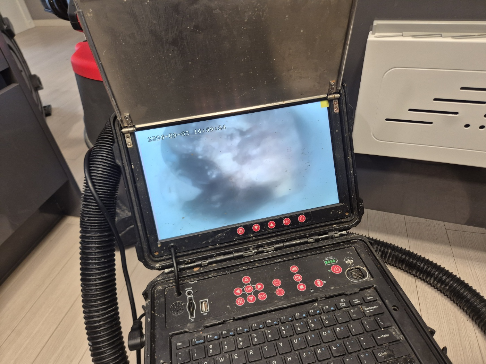
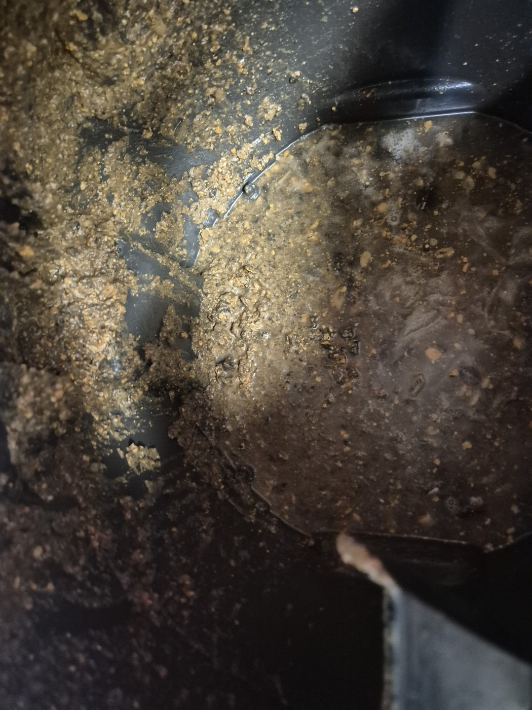
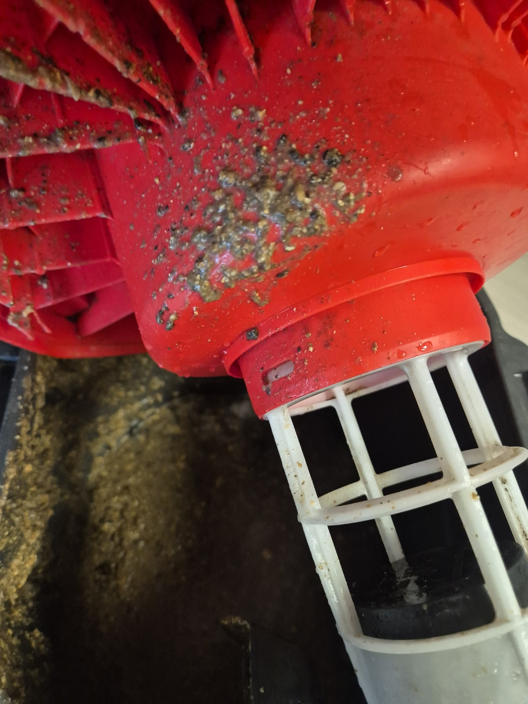
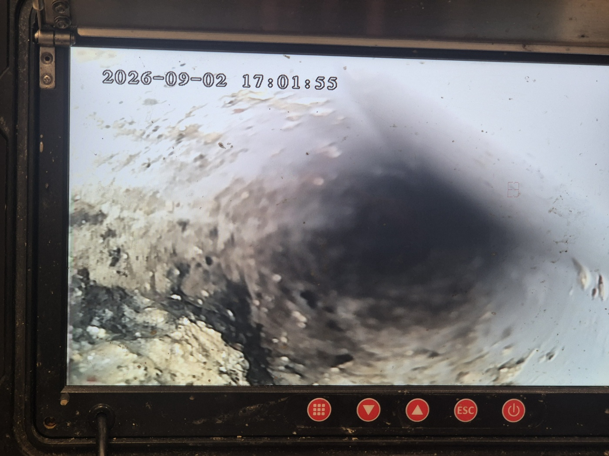
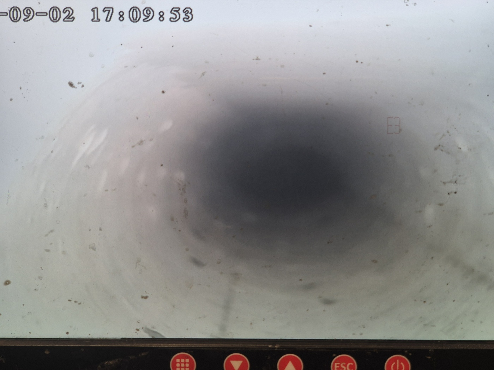

안녕하세요.. 고고고 설비입니다.. 오늘은 천안 두정동에 있는 아파트에서 하수구막힘, 싱크대막힘 신고를 받고 다녀온 현장입니다. 설거지물이 서서히 안 빠지더니 결국 완전히 막혀버렸다고 하셨어요.
싱크대 하부장 청소구를 열어보니 바닥에 물 얼룩이 남아있을 정도로 배수가 오래전부터 느렸던 것 같았습니다. 청소구 주변에도 얼룩이 겹겹이 남아있어서, 한두 번이 아니라 반복해서 조금씩 넘쳤던 흔적으로 보였어요.
정확한 막힘 지점을 찾기 위해 내시경 카메라를 배관 안쪽으로 넣어봤습니다. 화면이 뿌옇게 흐려질 정도로 이물질이 가득한 게 확인됐고, 카메라를 조금씩 밀어 넣을수록 화면이 점점 어두워지는 걸 보고 막힌 구간이 꽤 길다는 걸 알 수 있었어요.

배관 안쪽에서 시커멓게 눌어붙은 찌꺼기가 두껍게 나왔습니다. 오랫동안 쌓인 기름때와 음식물 찌꺼기가 서로 엉겨붙어 손으로 떼어내기도 쉽지 않을 정도였어요.

손으로 제거할 수 있는 부분을 걷어낸 뒤, 셕션 장비로 배관 안쪽에 남은 이물질을 빨아들이며 작업을 진행했습니다. 헤드 주변에도 끈적한 찌꺼기가 잔뜩 묻어 나왔고, 한 번 빨아들일 때마다 배관 안쪽이 조금씩 넓어지는 게 느껴졌어요.

중간중간 내시경으로 확인해보니 처음보다 배관 안쪽이 점점 넓어지는 게 보였습니다.

작업을 마치고 다시 한번 내시경으로 확인해보니, 처음과 다르게 배관 안쪽이 훤히 뚫려있는 게 보였습니다. 어둡고 뿌옇던 화면이 밝고 매끈하게 바뀐 걸 보고 확실히 뚫렸다는 걸 확인할 수 있었어요.

물을 내려서 배수가 정상적으로 되는 것까지 확인하고 마무리했습니다. 청소구 주변 얼룩도 함께 닦아드렸어요. 아파트 배관은 여러 세대의 하수가 한곳으로 모이는 만큼, 배수가 느려지는 신호를 놓치지 않고 초기에 점검받으시는 게 중요합니다.
고고고 설비는 주택, 아파트, 원룸, 상가, 공장의 생활 하수 오수 배관을 관리해 주는 업체입니다. 고고고 설비에 전화 주시면 친절상담 정확한 진단 확실한 해결로 보답해 드리겠습니다!!